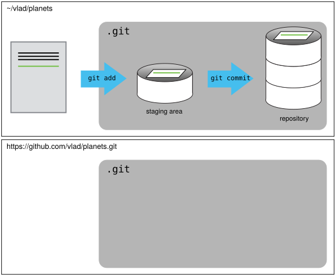

Github¶
Version control really comes into its own when we begin to collaborate with other people. We already have most of the machinery we need to do this; the only thing missing is to copy changes from one repository to another.
Systems like Git allow us to move work between any two repositories. In practice, though, it’s easiest to use one copy as a central hub, and to keep it on the web rather than on someone’s laptop. Most programmers use hosting services like GitHub, Bitbucket or GitLab to hold those main copies; we’ll explore the pros and cons of this in a later episode.
Let’s start by sharing the changes we’ve made to our current project with the world. To this end we are going to create a remote repository that will be linked to our local repository.
1. Creating a remote repository¶
Log in to GitHub, then click on the icon in the top right corner to
create a new repository called planets:

Name your repository “planets” and then click “Create Repository”.
Note: Since this repository will be connected to a local repository, it needs to be empty. Leave “Initialize this repository with a README” unchecked, and keep “None” as options for both “Add .gitignore” and “Add a license.” See the “GitHub License and README files” exercise below for a full explanation of why the repository needs to be empty.

As soon as the repository is created, GitHub displays a page with a URL and some information on how to configure your local repository:

This effectively does the following on GitHub’s servers:
$ mkdir planets
$ cd planets
$ git init
If you remember back to the earlier episode where we added and
committed our earlier work on mars.txt, we had a diagram of the local repository
which looked like this:
{kind=link}
Now that we have two repositories, we need a diagram like this:
{kind=link}
Note that our local repository still contains our earlier work on mars.txt, but the
remote repository on GitHub appears empty as it doesn’t contain any files yet.
2. Connect local to remote repository¶
Now we connect the two repositories. We do this by making the GitHub repository a remote for the local repository. The home page of the repository on GitHub includes the URL string we need to identify it:

Click on the ‘SSH’ link to change the protocol from HTTPS to SSH.
Learn more
HTTPS vs. SSH
We use SSH here because, while it requires some additional configuration, it is a security protocol widely used by many applications. The steps below describe SSH at a minimum level for GitHub. A supplemental episode to this lesson discusses advanced setup and concepts of SSH and key pairs, and other material supplemental to git related SSH.

Copy that URL from the browser, go into the local planets repository, and run
this command:
$ git remote add origin git@github.com:jh1889/planets.git
Make sure to use the URL for your repository rather than mine: the only
difference should be your username instead of jh1889.
origin is a local name used to refer to the remote repository. It could be called
anything, but origin is a convention that is often used by default in git
and GitHub, so it’s helpful to stick with this unless there’s a reason not to.
We can check that the command has worked by running git remote -v:
$ git remote -v
origin git@github.com:vlad/planets.git (fetch)
origin git@github.com:vlad/planets.git (push)
We’ll discuss remotes in more detail in the next section, while talking about how they might be used for collaboration.
3. SSH Background and Setup¶
Before I can connect to a remote repository, I need to set up a way for his computer to authenticate with GitHub so it knows it’s me trying to connect to my remote repository.
We are going to set up the method that is commonly used by many different services to authenticate access on the command line. This method is called Secure Shell Protocol (SSH). SSH is a cryptographic network protocol that allows secure communication between computers using an otherwise insecure network.
SSH uses what is called a key pair. This is two keys that work together to validate access. One key is publicly known and called the public key, and the other key called the private key is kept private. Very descriptive names.
You can think of the public key as a padlock, and only you have the key (the private key) to open it. You use the public key where you want a secure method of communication, such as your GitHub account. You give this padlock, or public key, to GitHub and say “lock the communications to my account with this so that only computers that have my private key can unlock communications and send git commands as my GitHub account.”
What we will do now is the minimum required to set up the SSH keys and add the public key to a GitHub account.
The first thing we are going to do is check if this has already been done on the computer you’re on. Because generally speaking, this setup only needs to happen once and then you can forget about it.
Learn more
Keeping your keys secure
You shouldn’t really forget about your SSH keys, since they keep your account secure. It’s good practice to audit your secure shell keys every so often. Especially if you are using multiple computers to access your account.
We will run the list command to check what key pairs already exist on your computer.
ls -al ~/.ssh
Your output is going to look a little different depending on whether or not SSH has ever been set up on the computer you are using.
Our user has not set up SSH on his computer, so their output is
ls: cannot access '/c/Users/jh1889/.ssh': No such file or directory
If SSH has been set up on the computer you’re using, the public and private key pairs will be listed.
The file names are either id_ed25519/id_ed25519.pub or id_rsa/id_rsa.pub
depending on how the key pairs were set up.
Since they don’t exist on this computer, we will use this command to create them.
3.1 Create an SSH key pair¶
To create an SSH key pair we use this command, where the -t option specifies which type of
algorithm to use and -C attaches a comment to the key (here, our email):
ssh-keygen -t ed25519 -C "jon.hill@york.ac.uk"
If you are using a legacy system that doesn’t support the Ed25519 algorithm, use:
$ ssh-keygen -t rsa -b 4096 -C "your_email@example.com"
Generating public/private ed25519 key pair.
Enter file in which to save the key (/c/Users/Vlad Dracula/.ssh/id_ed25519):
We want to use the default file, so just press :kbd: Enter.
Created directory '/c/Users/jh1889/.ssh'.
Enter passphrase (empty for no passphrase):
Now, it is prompting us for a passphrase. Since we are using computers that other people sometimes have access to, we want to create a passphrase. Be sure to use something memorable or save your passphrase somewhere, as there is no “reset my password” option.
Enter same passphrase again:
After entering the same passphrase a second time, we receive the confirmation
Your identification has been saved in /c/Users/jh1889/.ssh/id_ed25519
Your public key has been saved in /c/Users/jh1889/.ssh/id_ed25519.pub
The key fingerprint is:
SHA256:SMSPIStNyA00KPxuYu94KpZgRAYjgt9g4BA4kFy3g1o jon.hill@york.ac.uk
The key's randomart image is:
+--[ED25519 256]--+
|^B== o. |
|%*=.*.+ |
|+=.E =.+ |
| .=.+.o.. |
|.... . S |
|.+ o |
|+ = |
|.o.o |
|oo+. |
+----[SHA256]-----+
The “identification” is actually the private key. You should never share it. The public key is appropriately named. The “key fingerprint” is a shorter version of a public key.
Now that we have generated the SSH keys, we will find the SSH files when we check.
ls -al ~/.ssh
drwxr-xr-x 1 jh1889 197121 0 Jul 16 14:48 ./
drwxr-xr-x 1 jh1889 197121 0 Jul 16 14:48 ../
-rw-r--r-- 1 jh1889 197121 419 Jul 16 14:48 id_ed25519
-rw-r--r-- 1 jh1889 197121 106 Jul 16 14:48 id_ed25519.pub
3.2 Copy the public key to GitHub¶
Now we have a SSH key pair and we can run this command to check if GitHub can read our authentication.
ssh -T git@github.com
The authenticity of host 'github.com (192.30.255.112)' can't be established.
RSA key fingerprint is SHA256:nThbg6kXUpJWGl7E1IGOCspRomTxdCARLviKw6E5SY8.
This key is not known by any other names
Are you sure you want to continue connecting (yes/no/[fingerprint])? y
Please type 'yes', 'no' or the fingerprint: yes
Warning: Permanently added 'github.com' (RSA) to the list of known hosts.
git@github.com: Permission denied (publickey).
Right, we forgot that we need to give GitHub our public key!
First, we need to copy the public key. Be sure to include the .pub at the end, otherwise you’re looking at the private key.
cat ~/.ssh/id_ed25519.pub
ssh-ed25519 AAAAC3NzaC1lZDI1NTE5AAAAIDmRA3d51X0uu9wXek559gfn6UFNF69yZjChyBIU2qKI jon.hill@york.ac.uk
Now, going to GitHub.com, click on your profile icon in the top right corner to get the drop-down menu. Click “Settings,” then on the settings page, click “SSH and GPG keys,” on the left side “Account settings” menu. Click the “New SSH key” button on the right side. Now, you can add the title (Dracula uses the title “Vlad’s Lab Laptop” so he can remember where the original key pair files are located), paste your SSH key into the field, and click the “Add SSH key” to complete the setup.
Now that we’ve set that up, let’s check our authentication again from the command line.
$ ssh -T git@github.com
Hi Jon! You've successfully authenticated, but GitHub does not provide shell access.
Good! This output confirms that the SSH key works as intended. We are now ready to push our work to the remote repository.
4. Push local changes to a remote¶
Now that authentication is setup, we can return to the remote. This command will push the changes from our local repository to the repository on GitHub:
git push origin main
Since we set up a passphrase, it will prompt for it. If you completed advanced settings for your authentication, it will not prompt for a passphrase.
Enumerating objects: 16, done.
Counting objects: 100% (16/16), done.
Delta compression using up to 8 threads.
Compressing objects: 100% (11/11), done.
Writing objects: 100% (16/16), 1.45 KiB | 372.00 KiB/s, done.
Total 16 (delta 2), reused 0 (delta 0)
remote: Resolving deltas: 100% (2/2), done.
To https://github.com/jh1889/planets.git
* [new branch] main -> main
Our local and remote repositories are now in this state:

Learn more
The ‘-u’ Flag
You may see a -u option used with git push in some documentation. This
option is synonymous with the --set-upstream-to option for the git branch
command, and is used to associate the current branch with a remote branch so
that the git pull command can be used without any arguments. To do this,
simply use git push -u origin main once the remote has been set up.
We can pull changes from the remote repository to the local one as well:
git pull origin main
From https://github.com/vlad/planets
* branch main -> FETCH_HEAD
Already up-to-date.
Pulling has no effect in this case because the two repositories are already synchronized. If someone else had pushed some changes to the repository on GitHub, though, this command would download them to our local repository.
Practical exercise
GitHub GUI
Browse to your planets repository on GitHub.
Under the Code tab, find and click on the text that says “XX commits” (where “XX” is some number).
Hover over, and click on, the three buttons to the right of each commit.
What information can you gather/explore from these buttons?
How would you get that same information in the shell?
Solution
The left-most button (with the picture of a clipboard) copies the full identifier of the commit
to the clipboard. In the shell, git log will show you the full commit identifier for each
commit.
When you click on the middle button, you’ll see all of the changes that were made in that
particular commit. Green shaded lines indicate additions and red ones removals. In the shell we
can do the same thing with git diff. In particular, git diff ID1..ID2 where ID1 and
ID2 are commit identifiers (e.g. git diff a3bf1e5..041e637) will show the differences
between those two commits.
The right-most button lets you view all of the files in the repository at the time of that
commit. To do this in the shell, we’d need to checkout the repository at that particular time.
We can do this with git checkout ID where ID is the identifier of the commit we want to
look at. If we do this, we need to remember to put the repository back to the right state
afterwards!
Learn more
Uploading files directly in GitHub browser
Github also allows you to skip the command line and upload files directly to your repository without having to leave the browser. There are two options. First you can click the “Upload files” button in the toolbar at the top of the file tree. Or, you can drag and drop files from your desktop onto the file tree. You can read more about this on this GitHub page
Practical exercise
GitHub Timestamp
Create a remote repository on GitHub. Push the contents of your local repository to the remote. Make changes to your local repository and push these changes. Go to the repo you just created on GitHub and check the timestamps of the files. How does GitHub record times, and why?
Solution
GitHub displays timestamps in a human readable relative format (i.e. “22 hours ago” or “three weeks ago”). However, if you hover over the timestamp, you can see the exact time at which the last change to the file occurred.
Practical exercise
Push vs. Commit
In this episode, we introduced the “git push” command. How is “git push” different from “git commit”?
Solution
When we push changes, we’re interacting with a remote repository to update it with the changes we’ve made locally (often this corresponds to sharing the changes we’ve made with others). Commit only updates your local repository.
Practical exercise
GitHub License and README files
In this episode we learned about creating a remote repository on GitHub, but when you initialized your GitHub repo, you didn’t add a README.md or a license file. If you had, what do you think would have happened when you tried to link your local and remote repositories?
Solution
In this case, we’d see a merge conflict due to unrelated histories. When GitHub creates a README.md file, it performs a commit in the remote repository. When you try to pull the remote repository to your local repository, Git detects that they have histories that do not share a common origin and refuses to merge.
git pull origin main
warning: no common commits
remote: Enumerating objects: 3, done.
remote: Counting objects: 100% (3/3), done.
remote: Total 3 (delta 0), reused 0 (delta 0), pack-reused 0
Unpacking objects: 100% (3/3), done.
From https://github.com/vlad/planets
* branch main -> FETCH_HEAD
* [new branch] main -> origin/main
fatal: refusing to merge unrelated histories
You can force git to merge the two repositories with the option --allow-unrelated-histories.
Be careful when you use this option and carefully examine the contents of local and remote
repositories before merging.
git pull --allow-unrelated-histories origin main
From https://github.com/vlad/planets
* branch main -> FETCH_HEAD
Merge made by the 'recursive' strategy.
README.md | 1 +
1 file changed, 1 insertion(+)
create mode 100644 README.md